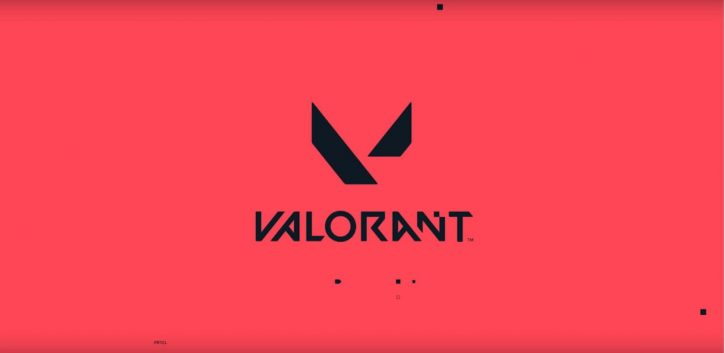
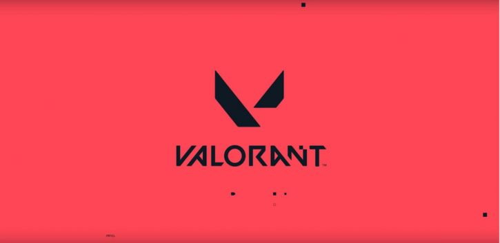

PIETRO FELIPE SANDRI
Bem-vindo ao meu site memorial, onde compartilharei um pouco sobre minha vida. Aqui, você encontrará informações sobre minha trajetória, preferências, características e hobbies. Descubra os momentos marcantes, os desafios superados e as conquistas notáveis que moldaram minha história.
Sobre mim:
- Nome: Pietro Felipe Sandri
- Data de nascimento: 19/03/2008 (16 anos)
- Localização: Rio dos Cedros, Bairro Divinéia, Rua Sete de Setembro
Passado
Nasci dia 19 de março de 2008 no hospital OASE na cidade de Timbó, mas sempre morei em Rio dos Cedros. Quando nasci minha vida foi meio conturbada, tinha problemas sérios com asma e rinite, então desde bebê frequentava o hospital do Pulmão em Blumenau, mas quando tinha 5 anos o tratamento acabou e fui praticamente curado. Tirando isso, posso dizer que minha infância foi muito boa, repleta de brincadeiras, não tinha aquela preocupação com deveres, mas sim em chegar em casa e brincar com meus amigos ou irmãos com carrinho hot-whells, Beyblade ou assistir desenho animados como Kick Buttowsk, Zou ou Ben-10.
Hobbies
Presente
Atualmente continuo morando em Rio dos Cedros e estudando na escola professor Giovani Trentini, estou no segundo ano do ensino médio, começei a fazer SENAI esse ano no curso de Assistente Técnico em Tecnologia da Informação. Não tenho muitos hobbies porém tem algumas coisas que gosto de fazer como treinar, escutar música jogar alguns games e as vezes assistir alguns filmes e series principalmente comédia ou ação.
Hobbies
Música
Jogos
 

Futuro
Ano que vem pretendo arrumar algum trabalho com carga horária completa envolvendo TI ou algum trabalho em escritório e acabar a escola, logo em seguida pretendo começar a fazer CNH e cursar algo relacionado a tecnologia da informação.